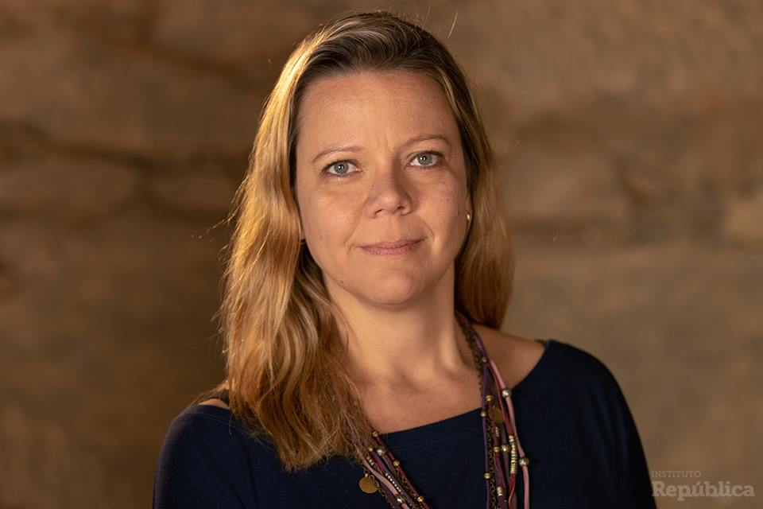
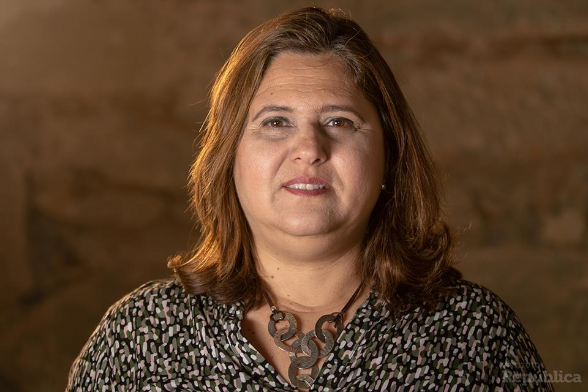
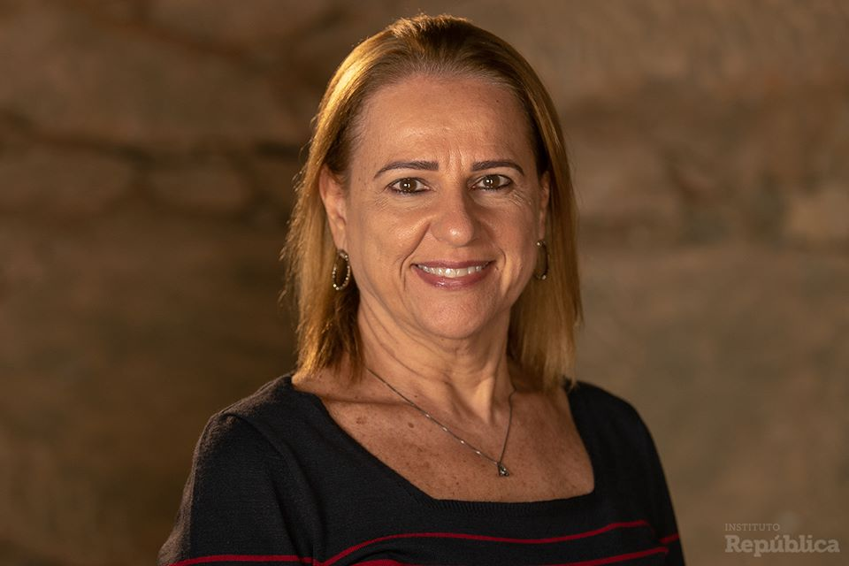
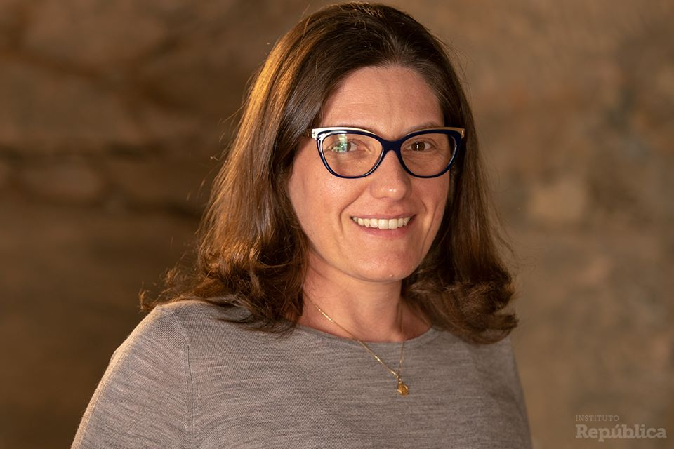
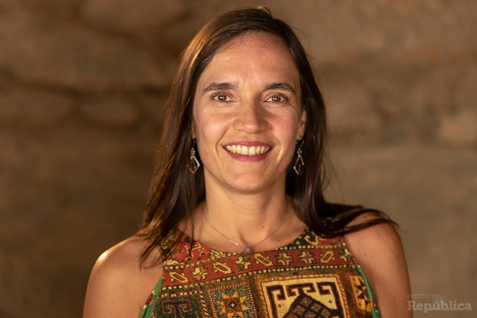
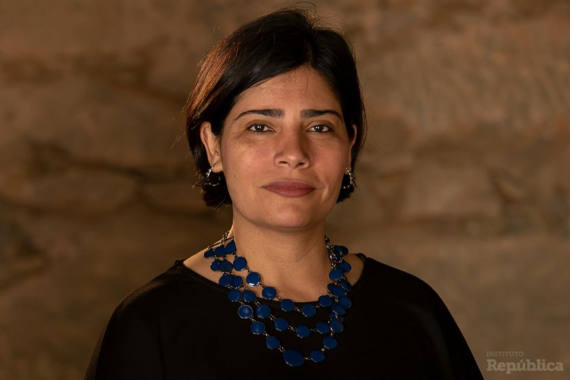
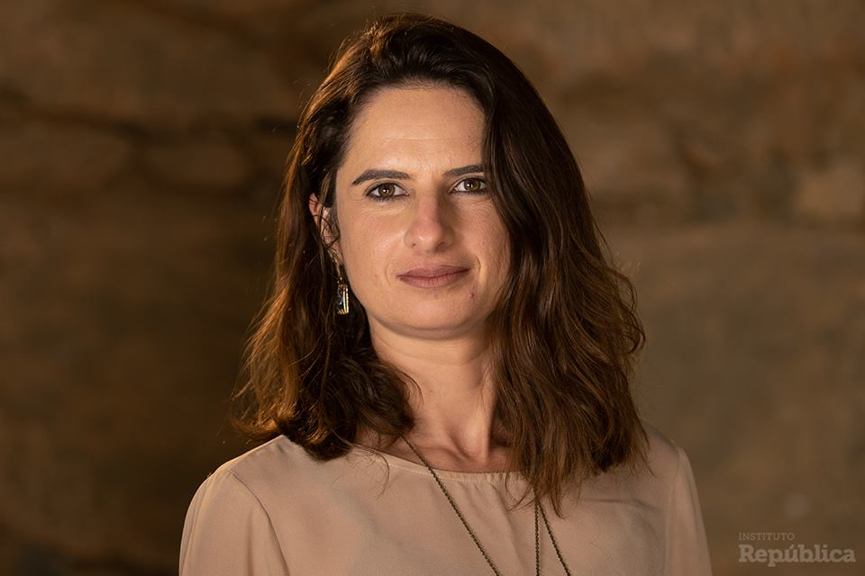

Residência em Capital Humano
A ‘República Fellows – Residência em Capital Humano’ é um programa anual para lidar com gestão de pessoas, um dos problemas centrais do serviço público brasileiro.
Durante 8 meses, os residentes receberão uma bolsa, sem interromper suas atividades profissionais. Terão encontros bimestrais nos quais vão interagir entre si e com especialistas, a fim de propor e testar (por meio de experimentos) soluções para o desafio proposto.
A Residência terá a coordenação executiva de Regina Silvia Pacheco e de um Conselho Curador composto por especialistas nacionais e estrangeiros.
O tema para a edição 2018/2019 da Residência é “Engajamento e incentivos não financeiros no Setor Público".
Se sim, candidate-se à Residência (inscrições de 02/07 a 17/07 de 2018):
Francisco Silva é chileno e desde 2004 se ocupa da implementação jurídica e institucional da reforma que criou a Dirección Nacional del Servicio Civil e o Sistema de Alta Dirección Pública. É também responsável pela cooperação internacional sobre emprego público e sobre o modelo chileno de seleção de dirigentes públicos. Nos anos recentes liderou a instalação dos Sistemas de Integridade junto ao Estado chileno. Atualmente é professor na Universidad Católica de Valparaíso e na Universidad Central.
É advogado, tendo cursado o Master en Dirección Estratégica de Personas, EAE- Universidad Politécnica de Cataluña e o Master en Gestión de Calidad de la EOI España, e ainda Planificación Estratégica na Universidad Católica de Chile e Relaciones Laborales na Universidad Alberto Hurtado de Chile. Em 2018, foi organizador do livro “Alta Dirección Pública, camino a la Profesionalización del Estado 2003-2017.
Engenheira e Mestre em Administração Pública pela EAESP-FGV-SP. Foi Ministra do Planejamento (2011-2014) e Presidente da Caixa Econômica Federal (2015-2016). É docente do curso de Mestrado de Estado, Governo e Políticas Públicas da Faculdade Latino-Americana de Ciências Sociais (FLACSO).
Foi docente da Fundação de Pesquisa e Desenvolvimento, ligada à FEA-USP-Ribeirão Preto. Foi Secretária de Inclusão Social e Habitação, em Santo André-SP, e coordenou o Programa Santo André Mais Igual, premiado em 2002 pela ONU entre as 10 melhores práticas públicas do mundo. Foi também Secretária de Administração e Modernização Administrativa, quando coordenou o Programa de Modernização Administrativa, selecionado pela ONU entre as 100 melhores práticas em 2000.
Renata Vilhena é consultora em Gestão Pública, Professora Associada da Fundação Dom Cabral desde janeiro de 2015, e membro do Conselho de Desenvolvimento Econômico e Social da Presidência da República – CDES desde novembro de 2016. Foi Secretária de Estado de Planejamento e Gestão do Governo de Minas Gerais de 2007 a 2014, responsável pela formulação e implementação da orientação para resultados naquele estado.
Renata é graduada em Estatística pela UFMG, participou do Programa de Gestão Avançada da Fundação Dom Cabral - PGA, é Especialista em Administração Pública pela Escola de Governo da Fundação João Pinheiro de MG e Especialista Lato Sensu em Gestão Pública e Legislação Urbana pela Universidade Cândido Mendes – Minas Gerais. É autora de diversas publicações nacionais e internacionais relativas a gestão pública.
Barbara Nunberg é expert em gestão pública internacional e governança pública, especialista em reforma do Estado em regiões e países em desenvolvimento. Foi analista senior e ocupou postos de direção no World Bank entre 1988 e 2009, com grande experiência de campo na Europa Central e do Leste, América Latina, África, Oriente Médio e Ásia.
Atualmente é professora visitante na Wagner School of Public Service (New York University) onde lidera grupo de trabalho sobre reforma da gestão das finanças públicas, e professora adjunta na Georgetown University, além de consultora de vários organismos internacionais. Entre 2010 e 2016 foi professora da Columbia University School of International and Political Affairs. Sua pesquisa atual se volta à gestão pública no Brasil, à assistência internacional para o desenvolvimento e à reforma em países pós-conflito. É doutora em Ciência Política pela Stanford University, e é autora de inúmeras publicações, inclusive sobre o Brasil.
Humberto Falcão Martins é professor da FGV-EBAPE e EAESP e consultor em gestão pública junto a governos e organismos internacionais. Fundou o Instituto Publix e o dirigiu por 15 anos, desenvolvendo e ajudando a implementar metodologias de gestão pública inovadoras. Ocupou posições executivas em empresas privadas e na administração pública, em especial no Ministério da Administração e Reforma do Estado e no Ministério do Planejamento, Orçamento e Gestão, onde foi Secretário de Gestão, delegado do Brasil no Comitê de Gestão Pública da OCDE e Presidente da Rede de Gestão Pública e Transparência do BID. Integrou a carreira federal de Especialista em Políticas Públicas e Gestão Governamental.
Humberto é graduado em Administração (UnB, 1986), Mestre em Administração Pública (EBAPE/FGV, 1995) e Doutor em Administração (EBAPE/FGV, 2003), tendo realizado estágios na York University (Canadá) e na École Nationale de Santé Publique (França). Possui cerca de 130 publicações, em periódicos especializados, congressos científicos e livros. Foi agraciado com o Prêmio ANPAD de Administração Pública, a Medalha Hélio Beltrão e o Mérito CONSAD em reconhecimento pelo seu trabalho.
Possui 43 anos de diversificada experiência ocupando várias posições gerenciais e de diretoria na área de Recursos Humanos nos segmentos financeiro, de serviços e industrial. Fundou e gerenciou por 18 anos a DBM do Brasil acumulando a gestão da América Latina por 10 anos. Hoje é sócia da Vicky Bloch Associados, empresa focada em Coaching e consultoria para empresas familiares. Atua diretamente na orientação, no desenho de novos projetos profissionais, no desenvolvimento de competências com CEO’s em momentos críticos em suas organizações ou suas carreiras. Apoia as famílias empreendedoras em processos de transição, sucessão e educação da next generation.
Lecionou no MBA de Recursos Humanos da FIA - Fundação Instituto de Administração (de 1997 a 2015) bem como na FGV-SP no PEC de Recursos Humanos (de 1984 a 2012). Leciona hoje no programa de Consultoria de Carreira da FIA, no IBGC no tema de Sucessão em empresas familiares e no Programa CEO FGV - Módulo Liderança e Alto Desempenho. Foi monitora do curso de Family Business de Harvard a convite do Prof. John Davis por dois anos. É formada em Psicologia pela PUC de São Paulo em 1975. Fez o “The Columbia Coaching Certification” (External Coach Intensive) na Columbia University . E participou na Singularity University do Advanced Management. Faz parte do Conselho de Administração do IBGC. É coautora do livro “Coaching Executivo – Uma questão de Atitude” – Elsevier Editora, Rio de Janeiro, RJ, 2012. Tem uma coluna diária na BAND NEWS FM sobre Carreira e é considerada uma das Influencers no Linkedin.
Regina Silvia Pacheco é professora permanente da Fundação Getulio Vargas – FGV-EAESP. Integra o UN’ CEPA – Committee of Experts in Public Administration, da ONU (2018-2021). É presidente do Conselho Científico do CLAD – Centro Iberoamericano de Administração para o Desenvolvimento.
Na FGV, desde 1988 atua nos cursos de Graduação, Mestrado e Doutorado em Administração Pública e Governo. Criou e coordenou o Mestrado Profissional em Gestão e Políticas Públicas, de 2008 a 2017. Entre 1995 e 2002, licenciou-de da FGV para assumir o cargo de Presidente da ENAP Escola Nacional de Administração Pública, em Brasília, onde integrou a equipe de dirigentes do Ministério da Administração Federal e Reforma do Estado - MARE. Foi Coordenadora Executiva do Consórcio Intermunicipal do Grande ABC. Recentemente exerceu o cargo de Secretária Adjunta de Governo da Prefeitura Municipal de São Paulo. É mestre e doutora pela Universidade de Paris Est.
O Instituto República é uma ONG de caráter não-partidário e não-corporativo que se baseia em evidências para investir na valorização e qualificação de pessoas que trabalham nas esferas governamentais do Brasil.
Acesse o site do Instituto República.
Contribuir para a produção e difusão de conhecimento crítico baseado em evidências que contribua concretamente para a melhoria do setor público brasileiro.
Apoiar soluções inovadoras (testáveis e escaláveis) para a promoção do capital humano no setor público (pesquisa aplicada).
Alavancar carreiras em ascensão, oferecendo suporte a profissionais capazes de gerar impacto transformador no setor público.
 Formada em direito e educação física, pós-graduada em política e Gestão de Segurança Pública, Direito Penal e Criminal, pós-graduanda em Gestão Prisional. Atua há 14 anos no setor público, 06 anos dirigindo uma unidade prisional considerada referência pelo CNJ e Ministra Presidente do STF, no tratamento da mulher privada de liberdade com seu filho e hoje coordena todas as unidades prisionais femininas e cidadania LGBT do Estado do Rio de Janeiro.
 Formada em Administração de Empresas pela UFF, é Pós-graduada em Gestão Estratégia de RH pela UNESA; Gestão Executiva pela COPPEAD, Gestão da Saúde pela FDC/IEP-HSL e Políticas Públicas e Gestão Governamental pela UCM. Atua há 23 anos no setor público, atualmente coordena o Programa de formação de Líderes Cariocas e gestores para a Prefeitura do Rio de Janeiro.
 Nascida em BH, MG em 1962. Formada em Medicina, UPE, 1991. Residência Médica em Pediatria. Trabalhei na Secretaria Estadual de Saúde de Pernambuco de 1994 até 2016,em diversas funções e cargos, desde médica plantonista de Urgência Pediátrica, até Secretária Estadual de Saúde. Superintendência de Interiorização do IMIP, na gestão das unidades de saúde do interior de PE e BA, e Diretoria de Articulação da Fundação HEMOPE. Especialização em Auditoria Médica, Gestão Governamental, Mestrado Profissionalizante da SVS/MS ENSP/Fiocruz. Atualmente ocupo o cargo de Secretária Municipal de Caruaru/PE e curso o Master em Liderança e Gestão Pública- MLG/CLP.
 Sou graduada em Administração de Empresas pela PUC-SP e cursei o Mestrado em Relações Industriais e Gestão de Recursos Humanos da Universidade Estadual de New Jersey (Rutgers) – EUA. Possuo experiência na área de Recursos Humanos de médias e grandes empresas de diversas indústrias (construção civil, consultoria, produtos de consumo e farmacêutica), tendo atuado em posições de escopo regional (América Latina) e local.
Economista formada na UFRJ e com mestrado na USP, Carla tem pós-graduação em gestão escolar, pela Fundação Pitágoras, e em Liderança e Gestão Pública (MLG), pelo Centro de Liderança Pública. De 2010 a 2012 trabalhou no Instituto Trevo e participou do desenvolvimento de um modelo inovador de escola vocacionada para o esporte no município do Rio de Janeiro e que hoje é referência nacional. De 2013 a meados de 2018 trabalhou na Secretaria Municipal de Educação do Rio de Janeiro (SME), passando por diferentes desafios: atuou na expansão do tempo integral, realizou análises visando a melhoria da qualidade do gasto, contribuiu para o fortalecimento da política de estágio probatório dos professores e, a partir de 2018, assumiu o Planejamento Estratégico de Recursos Humanos. Como lema de trabalho, Carla gosta muito de usar uma frase dita por um diretor de escola "Sozinho vamos mais rápido, mas juntos vamos mais longe." E, somando e canalizando forças, ela segue firme nessa missão de melhorar a educação brasileira.
 Advogada e Socióloga. Mestre em Filosofia do Direito pela Faculdade de Direito da Universidade de São Paulo. Foi assessora de projetos no Instituto São Paulo Contra a Violência, consultora do Banco Mundial e do BID em temas de segurança pública e prevenção da violência. Fellow no programa Draper Hills Summer Fellows (2018) oferecido pelo Center on Development, Democracy and the Rule of Law da Universidade de Stanford, CA. Atualmente é Assessora Sênior do Instituto Sou da Paz.
 Major da Polícia Militar do Estado do Rio Janeiro (PMERJ) com, 44 anos de idade e 18 anos de serviço prestados à segurança pública do estado do Rio de janeiro. Atualmente é a Subchefe de Comunicação Social da PMERJ. Possui título de mestre em Ciências Sociais pela Universidade do Estado do Rio de Janeiro - UERJ (2012), é graduada em Ciências Sociais pela UERJ (2010), Pós-Graduada em Gênero e Direito pela Escola de Magistratura do Rio de Janeiro - EMERJ (2017) e Pós-Graduada em Segurança Pública pela Universidade Cândido Mendes (2010). Dentre as principais funções exercidas estão: a Coordenação Estadual dos Conselhos Comunitários de Segurança Pública do Estado do Rio de Janeiro de 2012 a 2018; além da co-organização do relatório temático Dossiê Mulher de 2010 a 2018; também atua como instrutora das polícias militar e civil, contribuído na formação e qualificação dos profissionais de segurança pública nas disciplinas de análise criminal, sociologia, direitos humanos e polícia comunitária. A Major Claudia Moraes integra a Comissão Especial de Segurança da Mulher do Conselho Estadual de Direito da Mulher - CEDIM/RJ e é membro do Fórum Permanente de Violência Doméstica e de Gênero da Escola da Magistratura do Estado do Rio de Janeiro – EMERJ. — with Claudia Moraes.
Graduada em Administração Pública pela Fundação João Pinheiro; em Direito pela UFMG; pós-graduada no MBA em Gestão Estratégica de Pessoas pela FGV e mestre em Administração pela PUC /FDC. É servidora da carreira de EPPGG da SEPLAG/MG desde 2002. Atuou em vários cargos gerenciais na área de gestão de pessoas, destacando sua atuação como Subsecretária de Gestão de Pessoas do Estado, no período de 2011 a 2014, e desde janeiro de 2017 está cedida para a PBH e atua como Subsecretária de Gestão de Pessoas responsável pela gestão de pessoas no âmbito de todo o Poder Executivo Municipal visando ao desenvolvimento humano e organizacional por intermédio da coordenação, regulamentação, implementação e avaliação da política de recursos humanos. É professora de disciplinas na área de gestão pública na Fundação Dom Cabral.
Psicóloga (UFBA-BR/Universidad de Granada-ESP) e pós-graduada em Administração de Empresas e Negócios pela Fundação Getúlio Vargas (FGV). É especialista em Educação Corporativa (FIA/USP) e atualmente cursa pós-Graduação em Design Instrucional (SENAC/Universidade de Lisboa). Em sua trajetória, possui consistente experiência profissional como Gestora de Pessoas e Consultoria Interna de RH em multinacionais nos setores do varejo, petroquímica, siderurgia, investidoras e centros de tecnologia. É palestrante e já atuou como professora universitária convidada, no que tange os diversos temas da Psicologia Organizacional e do Trabalho.
Psicóloga, coach sistêmico, consteladora sistêmica, coordenadora da Unidade de Ação Gestão do Centro de Educação Transdisciplinar – CETRANS, ex-professora da FGV na área da psicologia, especialista em processos grupais, diretora e supervisora de grupos operativos no Instituto Pichon-Rivière de São Paulo, terapeuta em consultório particular, doutora em psicologia social.
Intérprete de LIBRAS, professora e advogada, formada em Direito pela Fundação Eurípedes Soares da Rocha e pós graduada em Gestão Pública pelo Centro de Liderança Pública (CLP). Atuou como como Secretária Municipal de Educação de Ourinhos/SP de 2013 a 2016 e desde 2017 exerce esta função no município de Londrina PR, após ser aprovada em um processo de seleção.
Natural de Novo Hamburgo – RS, morador de Brasília - DF, é formado em Administração de Empresas pela Universidade de Brasília – UnB e Mestre em Gestão de Pessoas (People and Employment) pela Auckland University of Technology, com foco em Gestão de Desempenho no setor público. Atuou no ramo de consultoria em Gestão de Pessoas, iniciando com empresas privadas e depois atuando com órgãos públicos nas esferas Federal, Estadual e Municipal. Pesquisa e inovação também são áreas de grande interesse, tendo publicado em congressos como CONSAD e CLAD, além de atuar há dois anos como Vice-Presidente Técnico da ABRH-DF, onde promovo eventos para o avanço do debate em Gestão de Pessoas.
Psicóloga, MBA em Gestão de Pessoas pela FGV e pós-graduanda no MBA Executivo pela Unifor, participado dos módulos em Wharton - University of Pennsylvania e cursos pela Columbia University (EUA). Há 12 anos atua na área de Gestão de Pessoas do setor público; desde 2016, na Secretaria do Planejamento e Gestão, coordena a Gestão Estratégica de Gente com abrangência nos órgãos do poder Executivo do Estado do Ceará.
 Acredito que nós servidores públicos temos a missão de servir o cidadão, melhorar a sociedade. Atualmente Trabalha no TCU, coordenando capacitações em competências pessoais e liderança, pois tenho convicção que para sermos melhor profissionais, servidores, temos que ser melhores seres humanos.
Entrei na PMERJ com 24 anos (2008) e nesses 10 anos de experiência profissional ratifiquei valores os quais me foram ensinados por meus pais, como honestidade, bondade e perseverança. Gosto de lutar pelo bem e de transmitir prosperidade e fazer com que as pessoas se sintam mais felizes. Sou de família circense e aprendi a viver, mesmo nas dificuldades, transmitindo bom humor e buscando a felicidade. Tento levar um pouco disso para os lugares que frequento e principalmente, o local onde trabalho, talvez por isso me identifiquei tanto com minha profissão: policial militar. Tive a oportunidade de trabalhar 6 anos no projeto de pacificação do Estado do RJ e foi na UPP que aprendi e vivi experiências inigualáveis. Salvei vidas, ajudei ao próximo, briguei, prendi, atirei, sofri, sorri etc. Tive a oportunidade de comandar uma tropa num momento de crise nacional onde o único atributo que me cabia como gestora era usar a motivação para incentivar a minha tropa e, junto deles, trabalhei na linha de frente usando o exemplo como característica principal da minha liderança. Acho que o mais relevante, até o momento, da minha trajetória profissional, é ter trabalhado em locais bastantes difíceis e poder cumprir a missão de servir e proteger com toda honra, caráter e vontade. Sei que não posso mudar o mundo, mas me defino como entusiasta e quero continuar lutando por uma melhoria pelo menos na minha Corporação.
Deixe seu email e receba atualizações: